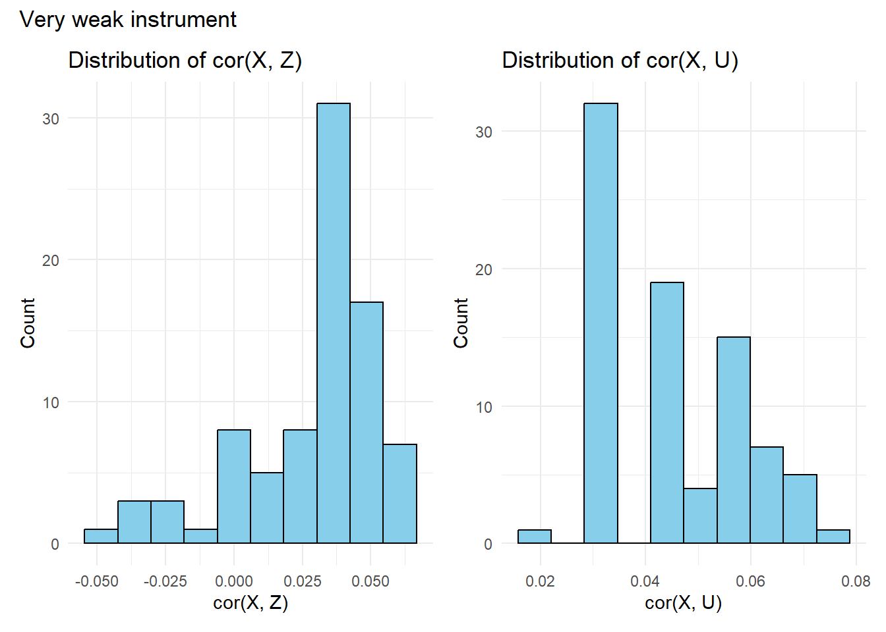
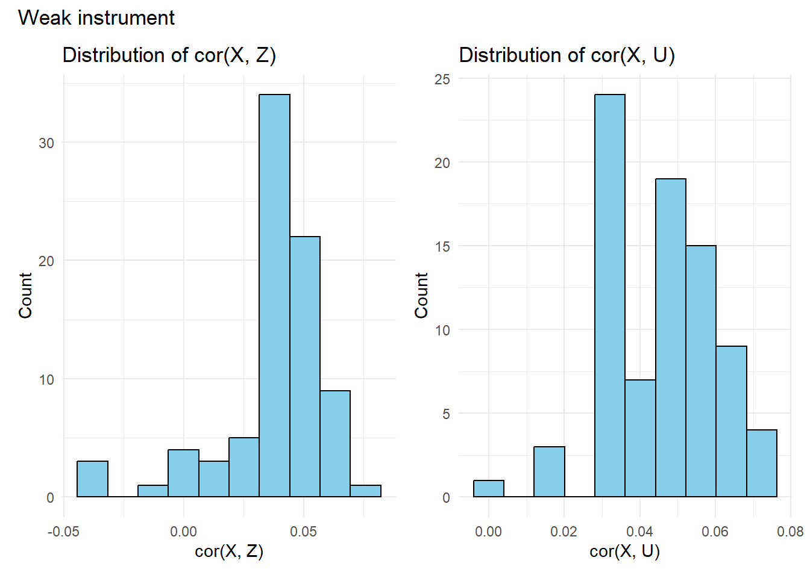
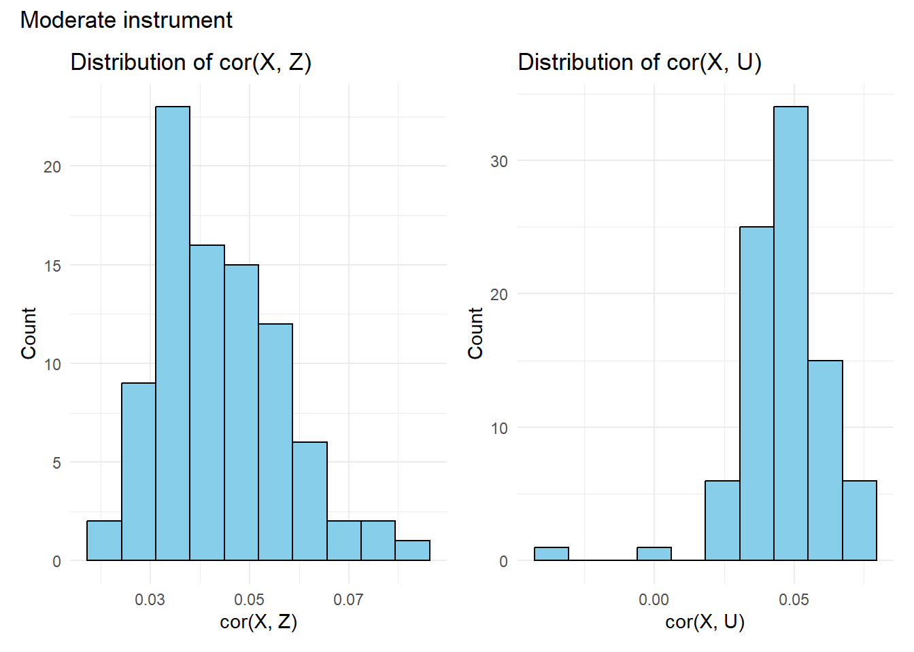
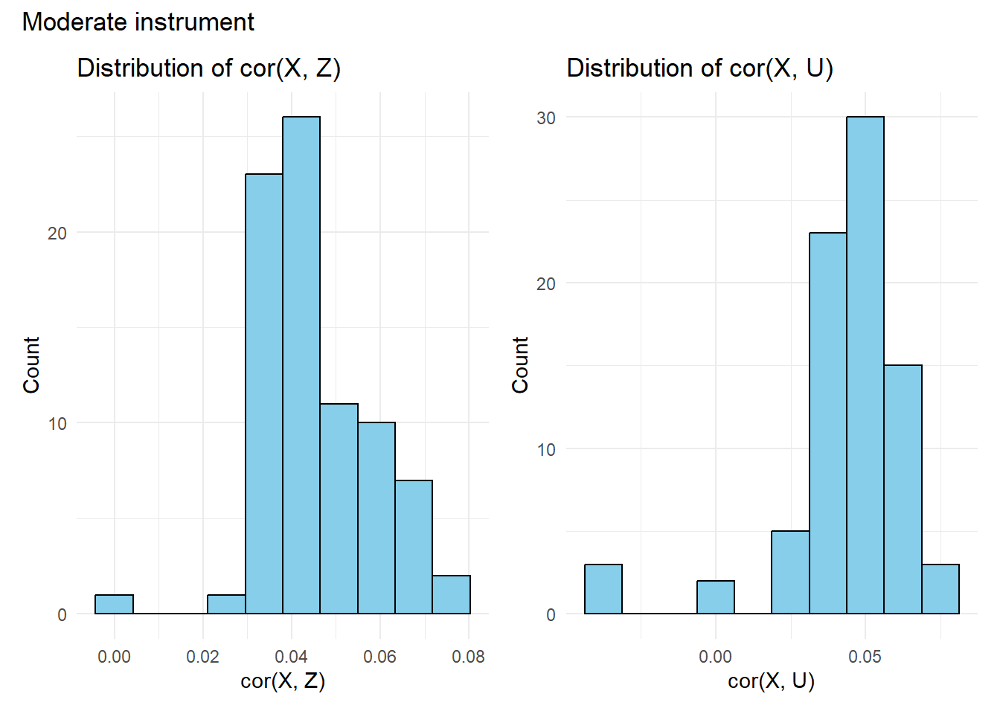
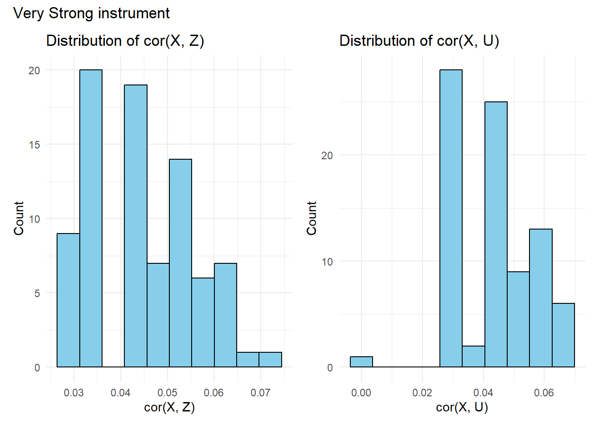
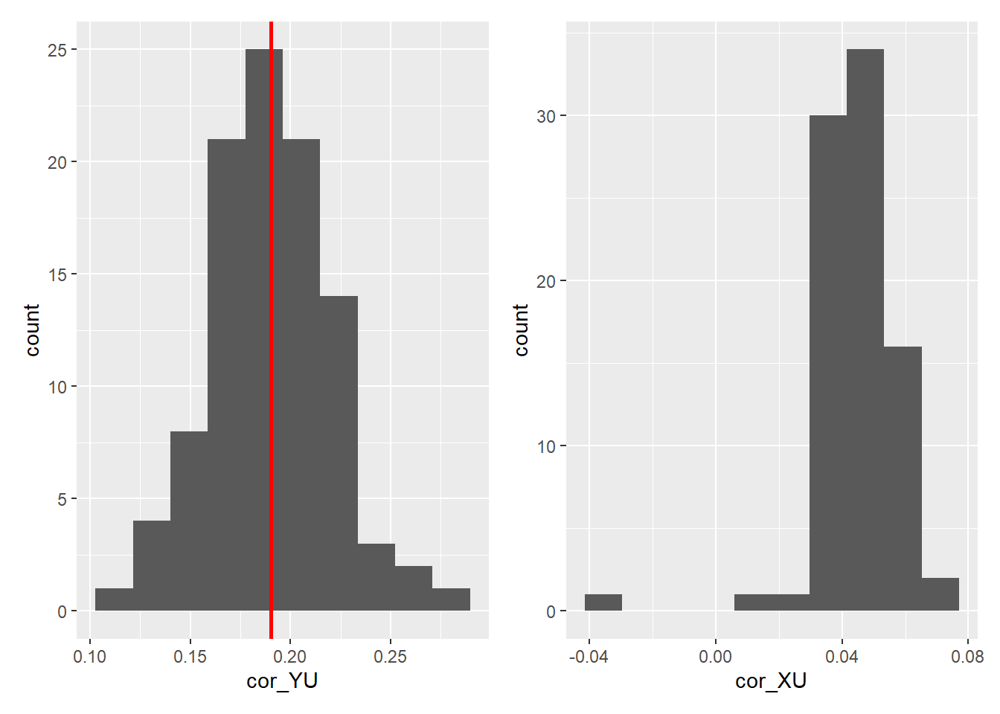

Attaching package: 'dplyr'The following objects are masked from 'package:stats':
filter, lagThe following objects are masked from 'package:base':
intersect, setdiff, setequal, union
Attaching package: 'dplyr'The following objects are masked from 'package:stats':
filter, lagThe following objects are masked from 'package:base':
intersect, setdiff, setequal, unionInstrumental Variable Z: Binary
Exposure X: Binary
Confounder U: Binary = NOT correlated with X and Y (Important) | it is independent of X and Y | X and Y are dependent on U
Outcome Y: Binary
flowchart LR Z((Z)) ---> X((X)) X --> Y((Y)) U((U)) --> X U --> Y
generate_dataset <- \(
n_sample_size = 1000,
sce = 0,
beta_X_U = 1,
beta_X_Z = 1,
beta_Y_U = 1,
beta_Y_X = 1
) {
if (sce == 1) {
beta_X_Z <- 1.2; beta_X_U <- 4;
} else if (sce == 2) {
beta_X_Z <- 2.3; beta_X_U <- 4;
} else if (sce == 3) {
beta_X_Z <- 4.4; beta_X_U <- 4;
} else if (sce == 4) {
beta_X_Z <- 5.8; beta_X_U <- 4;
} else if (sce == 5) {
beta_X_Z <- 8; beta_X_U <- 4;
}
# independent variables
Z <- rbinom(n_sample_size, size = 1, prob = 0.5) # 1:1
U <- rbinom(n_sample_size, size = 1, prob = 0.5)
# dependent variables
expit <- \(x) exp(x) / (1 + exp(x))
X <- rbinom(
n_sample_size,
size = 1,
prob = expit(5 + beta_X_U * U + beta_X_Z * Z)
)
Y <- rbinom(
n_sample_size,
size = 1,
prob = expit(beta_Y_U * U + beta_Y_X * X)
)
data.frame(Z = Z, U = U, X = X, Y = Y)
}
cor_hists <- \(beta_X_Z, beta_X_U) {
cors <- sapply(1:100, \(rep) {
dat <- generate_dataset(beta_X_Z = beta_X_Z, beta_X_U = beta_X_U)
with(dat, c(cor(X, Z), cor(X, U)))
})
mean_XZ <- mean(cors[1, ])
mean_XU <- mean(cors[2, ])
df <- data.frame(
cor_XZ = cors[1, ],
cor_XU = cors[2, ]
)
p1 <- ggplot(df, aes(x = cor_XZ)) +
geom_histogram(bins = 10, fill = "skyblue", colour = "black") +
geom_vline(xintercept = mean_XZ, colour = "darkblue", linewidth = 1) +
annotate("label", x = mean_XZ, y = Inf,
label = sprintf("Mean Cor(X,Z) = %.2f", mean_XZ),
vjust = 7, colour = "darkblue", fill = "white", size = 5) +
labs(title = "Distribution of cor(X, Z)", x = "cor(X, Z)", y = "Count") +
theme_minimal()
p2 <- ggplot(df, aes(x = cor_XU)) +
geom_histogram(bins = 10, fill = "skyblue", colour = "black") +
geom_vline(xintercept = mean_XU, colour = "red", linewidth = 1) +
annotate("label", x = mean_XU, y = Inf,
label = sprintf("Mean Cor(X,U) = %.2f", mean_XU),
vjust = 7, colour = "red", fill = "white", size = 5) +
labs(title = "Distribution of cor(X, U)", x = "cor(X, U)", y = "Count") +
theme_minimal()
(p1 | p2)
}
# Very weak instrument: rho_{X,Z} ≈ 0.18 | rho_{X,U} ≈ 0.48
cor_hists(beta_X_Z = 1.2, beta_X_U = 4)+ plot_annotation(
title = "Very weak instrument"
)Warning in cor(X, Z): the standard deviation is zeroWarning in cor(X, U): the standard deviation is zeroWarning in cor(X, Z): the standard deviation is zeroWarning in cor(X, U): the standard deviation is zeroWarning in cor(X, Z): the standard deviation is zeroWarning in cor(X, U): the standard deviation is zeroWarning in cor(X, Z): the standard deviation is zeroWarning in cor(X, U): the standard deviation is zeroWarning in cor(X, Z): the standard deviation is zeroWarning in cor(X, U): the standard deviation is zeroWarning in cor(X, Z): the standard deviation is zeroWarning in cor(X, U): the standard deviation is zeroWarning in cor(X, Z): the standard deviation is zeroWarning in cor(X, U): the standard deviation is zeroWarning in cor(X, Z): the standard deviation is zeroWarning in cor(X, U): the standard deviation is zeroWarning in cor(X, Z): the standard deviation is zeroWarning in cor(X, U): the standard deviation is zeroWarning in cor(X, Z): the standard deviation is zeroWarning in cor(X, U): the standard deviation is zeroWarning in cor(X, Z): the standard deviation is zeroWarning in cor(X, U): the standard deviation is zeroWarning: Removed 11 rows containing non-finite outside the scale range
(`stat_bin()`).Warning: Removed 1 row containing missing values or values outside the scale range
(`geom_vline()`).Warning: Removed 1 row containing missing values or values outside the scale range
(`geom_label()`).Warning: Removed 11 rows containing non-finite outside the scale range
(`stat_bin()`).Warning: Removed 1 row containing missing values or values outside the scale range
(`geom_vline()`).Warning: Removed 1 row containing missing values or values outside the scale range
(`geom_label()`).
# Weak instrument: rho_{X,Z} ≈ 0.32 | rho_{X,U} ≈ 0.55
cor_hists(beta_X_Z = 2.3, beta_X_U = 4)+ plot_annotation(
title = "Weak instrument"
)Warning in cor(X, Z): the standard deviation is zeroWarning in cor(X, U): the standard deviation is zeroWarning in cor(X, Z): the standard deviation is zeroWarning in cor(X, U): the standard deviation is zeroWarning in cor(X, Z): the standard deviation is zeroWarning in cor(X, U): the standard deviation is zeroWarning in cor(X, Z): the standard deviation is zeroWarning in cor(X, U): the standard deviation is zeroWarning in cor(X, Z): the standard deviation is zeroWarning in cor(X, U): the standard deviation is zeroWarning in cor(X, Z): the standard deviation is zeroWarning in cor(X, U): the standard deviation is zeroWarning in cor(X, Z): the standard deviation is zeroWarning in cor(X, U): the standard deviation is zeroWarning in cor(X, Z): the standard deviation is zeroWarning in cor(X, U): the standard deviation is zeroWarning in cor(X, Z): the standard deviation is zeroWarning in cor(X, U): the standard deviation is zeroWarning in cor(X, Z): the standard deviation is zeroWarning in cor(X, U): the standard deviation is zeroWarning in cor(X, Z): the standard deviation is zeroWarning in cor(X, U): the standard deviation is zeroWarning in cor(X, Z): the standard deviation is zeroWarning in cor(X, U): the standard deviation is zeroWarning in cor(X, Z): the standard deviation is zeroWarning in cor(X, U): the standard deviation is zeroWarning in cor(X, Z): the standard deviation is zeroWarning in cor(X, U): the standard deviation is zeroWarning in cor(X, Z): the standard deviation is zeroWarning in cor(X, U): the standard deviation is zeroWarning: Removed 15 rows containing non-finite outside the scale range
(`stat_bin()`).Warning: Removed 1 row containing missing values or values outside the scale range
(`geom_vline()`).Warning: Removed 1 row containing missing values or values outside the scale range
(`geom_label()`).Warning: Removed 15 rows containing non-finite outside the scale range
(`stat_bin()`).Warning: Removed 1 row containing missing values or values outside the scale range
(`geom_vline()`).Warning: Removed 1 row containing missing values or values outside the scale range
(`geom_label()`).
# Moderate instrument: rho_{X,Z} ≈ 0.53| rho_{X,U} ≈ 0.45
cor_hists(beta_X_Z = 4.4, beta_X_U = 4)+ plot_annotation(
title = "Moderate instrument"
)Warning in cor(X, Z): the standard deviation is zeroWarning in cor(X, U): the standard deviation is zeroWarning in cor(X, Z): the standard deviation is zeroWarning in cor(X, U): the standard deviation is zeroWarning in cor(X, Z): the standard deviation is zeroWarning in cor(X, U): the standard deviation is zeroWarning in cor(X, Z): the standard deviation is zeroWarning in cor(X, U): the standard deviation is zeroWarning in cor(X, Z): the standard deviation is zeroWarning in cor(X, U): the standard deviation is zeroWarning in cor(X, Z): the standard deviation is zeroWarning in cor(X, U): the standard deviation is zeroWarning in cor(X, Z): the standard deviation is zeroWarning in cor(X, U): the standard deviation is zeroWarning in cor(X, Z): the standard deviation is zeroWarning in cor(X, U): the standard deviation is zeroWarning in cor(X, Z): the standard deviation is zeroWarning in cor(X, U): the standard deviation is zeroWarning in cor(X, Z): the standard deviation is zeroWarning in cor(X, U): the standard deviation is zeroWarning in cor(X, Z): the standard deviation is zeroWarning in cor(X, U): the standard deviation is zeroWarning in cor(X, Z): the standard deviation is zeroWarning in cor(X, U): the standard deviation is zeroWarning in cor(X, Z): the standard deviation is zeroWarning in cor(X, U): the standard deviation is zeroWarning: Removed 13 rows containing non-finite outside the scale range
(`stat_bin()`).Warning: Removed 1 row containing missing values or values outside the scale range
(`geom_vline()`).Warning: Removed 1 row containing missing values or values outside the scale range
(`geom_label()`).Warning: Removed 13 rows containing non-finite outside the scale range
(`stat_bin()`).Warning: Removed 1 row containing missing values or values outside the scale range
(`geom_vline()`).Warning: Removed 1 row containing missing values or values outside the scale range
(`geom_label()`).
# Strong instrument: rho_{X,Z} ≈ 0.7 | rho_{X,U} ≈ 0.29
cor_hists(beta_X_Z = 5.8, beta_X_U = 4)+ plot_annotation(
title = "Moderate instrument"
)Warning in cor(X, Z): the standard deviation is zeroWarning in cor(X, U): the standard deviation is zeroWarning in cor(X, Z): the standard deviation is zeroWarning in cor(X, U): the standard deviation is zeroWarning in cor(X, Z): the standard deviation is zeroWarning in cor(X, U): the standard deviation is zeroWarning in cor(X, Z): the standard deviation is zeroWarning in cor(X, U): the standard deviation is zeroWarning in cor(X, Z): the standard deviation is zeroWarning in cor(X, U): the standard deviation is zeroWarning in cor(X, Z): the standard deviation is zeroWarning in cor(X, U): the standard deviation is zeroWarning in cor(X, Z): the standard deviation is zeroWarning in cor(X, U): the standard deviation is zeroWarning in cor(X, Z): the standard deviation is zeroWarning in cor(X, U): the standard deviation is zeroWarning in cor(X, Z): the standard deviation is zeroWarning in cor(X, U): the standard deviation is zeroWarning in cor(X, Z): the standard deviation is zeroWarning in cor(X, U): the standard deviation is zeroWarning in cor(X, Z): the standard deviation is zeroWarning in cor(X, U): the standard deviation is zeroWarning in cor(X, Z): the standard deviation is zeroWarning in cor(X, U): the standard deviation is zeroWarning in cor(X, Z): the standard deviation is zeroWarning in cor(X, U): the standard deviation is zeroWarning in cor(X, Z): the standard deviation is zeroWarning in cor(X, U): the standard deviation is zeroWarning in cor(X, Z): the standard deviation is zeroWarning in cor(X, U): the standard deviation is zeroWarning in cor(X, Z): the standard deviation is zeroWarning in cor(X, U): the standard deviation is zeroWarning in cor(X, Z): the standard deviation is zeroWarning in cor(X, U): the standard deviation is zeroWarning in cor(X, Z): the standard deviation is zeroWarning in cor(X, U): the standard deviation is zeroWarning in cor(X, Z): the standard deviation is zeroWarning in cor(X, U): the standard deviation is zeroWarning in cor(X, Z): the standard deviation is zeroWarning in cor(X, U): the standard deviation is zeroWarning in cor(X, Z): the standard deviation is zeroWarning in cor(X, U): the standard deviation is zeroWarning in cor(X, Z): the standard deviation is zeroWarning in cor(X, U): the standard deviation is zeroWarning in cor(X, Z): the standard deviation is zeroWarning in cor(X, U): the standard deviation is zeroWarning in cor(X, Z): the standard deviation is zeroWarning in cor(X, U): the standard deviation is zeroWarning in cor(X, Z): the standard deviation is zeroWarning in cor(X, U): the standard deviation is zeroWarning in cor(X, Z): the standard deviation is zeroWarning in cor(X, U): the standard deviation is zeroWarning in cor(X, Z): the standard deviation is zeroWarning in cor(X, U): the standard deviation is zeroWarning in cor(X, Z): the standard deviation is zeroWarning in cor(X, U): the standard deviation is zeroWarning in cor(X, Z): the standard deviation is zeroWarning in cor(X, U): the standard deviation is zeroWarning in cor(X, Z): the standard deviation is zeroWarning in cor(X, U): the standard deviation is zeroWarning in cor(X, Z): the standard deviation is zeroWarning in cor(X, U): the standard deviation is zeroWarning: Removed 31 rows containing non-finite outside the scale range
(`stat_bin()`).Warning: Removed 1 row containing missing values or values outside the scale range
(`geom_vline()`).Warning: Removed 1 row containing missing values or values outside the scale range
(`geom_label()`).Warning: Removed 31 rows containing non-finite outside the scale range
(`stat_bin()`).Warning: Removed 1 row containing missing values or values outside the scale range
(`geom_vline()`).Warning: Removed 1 row containing missing values or values outside the scale range
(`geom_label()`).
# Very Strong instrument: rho_{X,Z} ≈ 0.84 | rho_{X,U} ≈ 0.15
cor_hists(beta_X_Z = 8, beta_X_U = 4)+ plot_annotation(
title = "Very Strong instrument"
)Warning in cor(X, Z): the standard deviation is zeroWarning in cor(X, U): the standard deviation is zeroWarning in cor(X, Z): the standard deviation is zeroWarning in cor(X, U): the standard deviation is zeroWarning in cor(X, Z): the standard deviation is zeroWarning in cor(X, U): the standard deviation is zeroWarning in cor(X, Z): the standard deviation is zeroWarning in cor(X, U): the standard deviation is zeroWarning in cor(X, Z): the standard deviation is zeroWarning in cor(X, U): the standard deviation is zeroWarning in cor(X, Z): the standard deviation is zeroWarning in cor(X, U): the standard deviation is zeroWarning in cor(X, Z): the standard deviation is zeroWarning in cor(X, U): the standard deviation is zeroWarning in cor(X, Z): the standard deviation is zeroWarning in cor(X, U): the standard deviation is zeroWarning in cor(X, Z): the standard deviation is zeroWarning in cor(X, U): the standard deviation is zeroWarning in cor(X, Z): the standard deviation is zeroWarning in cor(X, U): the standard deviation is zeroWarning in cor(X, Z): the standard deviation is zeroWarning in cor(X, U): the standard deviation is zeroWarning in cor(X, Z): the standard deviation is zeroWarning in cor(X, U): the standard deviation is zeroWarning in cor(X, Z): the standard deviation is zeroWarning in cor(X, U): the standard deviation is zeroWarning in cor(X, Z): the standard deviation is zeroWarning in cor(X, U): the standard deviation is zeroWarning in cor(X, Z): the standard deviation is zeroWarning in cor(X, U): the standard deviation is zeroWarning in cor(X, Z): the standard deviation is zeroWarning in cor(X, U): the standard deviation is zeroWarning: Removed 16 rows containing non-finite outside the scale range
(`stat_bin()`).Warning: Removed 1 row containing missing values or values outside the scale range
(`geom_vline()`).Warning: Removed 1 row containing missing values or values outside the scale range
(`geom_label()`).Warning: Removed 16 rows containing non-finite outside the scale range
(`stat_bin()`).Warning: Removed 1 row containing missing values or values outside the scale range
(`geom_vline()`).Warning: Removed 1 row containing missing values or values outside the scale range
(`geom_label()`).
# Correlations of Y with U and X with U
cors <- sapply(1:100, \(rep) {
dat <- generate_dataset(beta_X_Z = 8, beta_X_U = 4)
with(dat, c(cor(X, U), cor(Y, U)))
})Warning in cor(X, U): the standard deviation is zeroWarning in cor(X, U): the standard deviation is zero
Warning in cor(X, U): the standard deviation is zero
Warning in cor(X, U): the standard deviation is zero
Warning in cor(X, U): the standard deviation is zero
Warning in cor(X, U): the standard deviation is zero
Warning in cor(X, U): the standard deviation is zero
Warning in cor(X, U): the standard deviation is zero
Warning in cor(X, U): the standard deviation is zero
Warning in cor(X, U): the standard deviation is zero
Warning in cor(X, U): the standard deviation is zero
Warning in cor(X, U): the standard deviation is zero
Warning in cor(X, U): the standard deviation is zero
Warning in cor(X, U): the standard deviation is zero
Warning in cor(X, U): the standard deviation is zero
Warning in cor(X, U): the standard deviation is zero
Warning in cor(X, U): the standard deviation is zero
Warning in cor(X, U): the standard deviation is zero df <- data.frame(cor_XU = cors[1,], cor_YU = cors[2,])
p1 <- ggplot(df, aes(x = cor_YU)) + geom_histogram(bins = 10) + geom_vline(xintercept = mean(df$cor_YU), colour = "red", linewidth = 1)
p2 <- ggplot(df, aes(x = cor_XU)) + geom_histogram(bins = 10) + geom_vline(xintercept = mean(df$cor_XU), colour = "red", linewidth = 1)
p1 | p2Warning: Removed 18 rows containing non-finite outside the scale range
(`stat_bin()`).Warning: Removed 1 row containing missing values or values outside the scale range
(`geom_vline()`).
fit_ols_once <- \(
dataset,
beta_Y_X = -1 # true log-odds effect of X on Y
) {
fit <- glm(Y ~ X, family = binomial(), data = dataset)
bhat <- coef(fit)
bx <- unname(bhat["X"])
# absolute and percent bias
bias_abs <- bx - beta_Y_X
bias_pct <- (bias_abs / beta_Y_X) * 100
# RMSE from fitted probabilities
p <- fitted(fit)
rmse <- sqrt(mean((dataset$Y - p)^2))
# pseudo-R²
null_fit <- glm(Y ~ 1, family = binomial(), data = dataset)
r2_mcfad <- 1 - as.numeric(logLik(fit) / logLik(null_fit))
r2_tjur <- mean(p[dataset$Y == 1]) - mean(p[dataset$Y == 0])
list(
coefs = bhat,
bias_abs = bias_abs,
bias_pct = bias_pct,
rmse = rmse,
R2 = list(McFadden = r2_mcfad, Tjur = r2_tjur),
n = nrow(dataset)
)
}
dat <- generate_dataset(sce = 1)
fit_ols_once(dat)$coefs
(Intercept) X
1.380056 NA
$bias_abs
[1] NA
$bias_pct
[1] NA
$rmse
[1] 0.4007481
$R2
$R2$McFadden
[1] 0
$R2$Tjur
[1] 0
$n
[1] 1000dat <- generate_dataset(sce = 5)
summary(glm(Y ~ X, family = binomial(), data = dat))
Call:
glm(formula = Y ~ X, family = binomial(), data = dat)
Coefficients:
Estimate Std. Error z value Pr(>|z|)
(Intercept) 13.57 378.59 0.036 0.971
X -12.13 378.59 -0.032 0.974
(Dispersion parameter for binomial family taken to be 1)
Null deviance: 978.22 on 999 degrees of freedom
Residual deviance: 977.37 on 998 degrees of freedom
AIC: 981.37
Number of Fisher Scoring iterations: 12fit_ts <- ivglm(
estmethod = "ts",
X = "X",
Y = "Y",
fitX.LZ = glm(X ~ Z, family = binomial(), data = dat),
fitY.LX = glm(Y ~ X, family = binomial(), data = dat), # form used for re-fit with Xhat
data = dat
)
summary(fit_ts)
Call:
ivglm(estmethod = "ts", X = "X", Y = "Y", fitX.LZ = glm(X ~ Z,
family = binomial(), data = dat), fitY.LX = glm(Y ~ X, family = binomial(),
data = dat), data = dat)
Coefficients:
Estimate Std. Error z value Pr(>|z|)
(Intercept) 7.028 39.330 0.179 0.858
X -5.602 39.408 -0.142 0.887Bias in covariate effects
RMSE | R^2
sample sizes: n = 50, 100, 500, 1000, 5000, 10000
Cor(Z,X) = Very weak:: rho = 0.25 | Weak:: rho = 0.35 | Moderate:: rho = 0.5 | Strong:: rho = 0.7 | Very strong:: rho = 0.9 ## TODO:
[] READ about rigorous definition of instrument strength